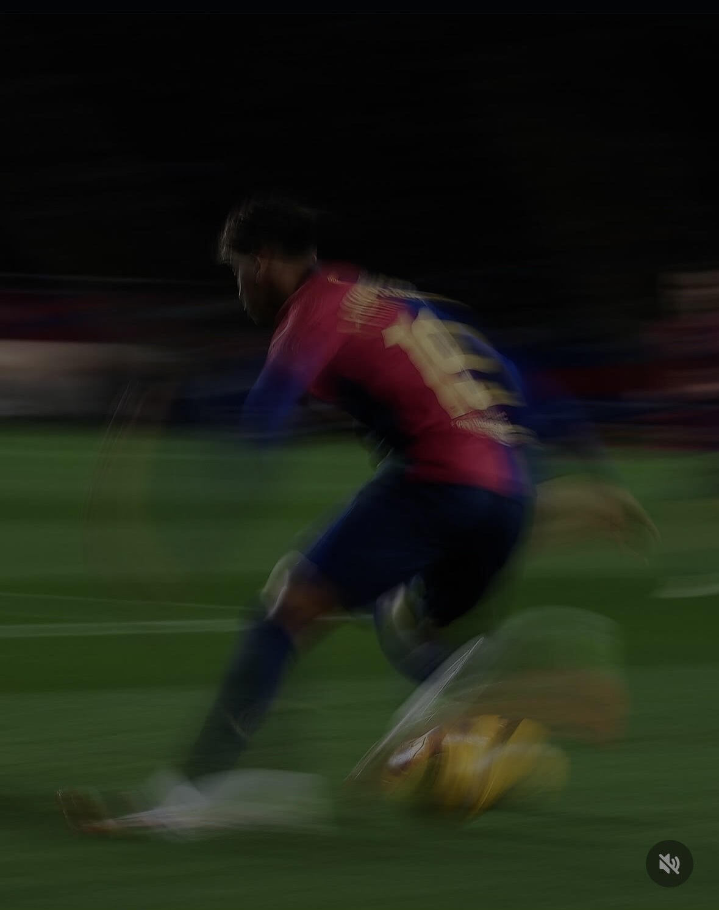

Other Interests
My favorite thing to do in the world is playing / watching football and speaking to my friends. I have trained football for around 3 years, though I wasn't really talented. My favorite player currently is Lamine Yamal. He is fearless on the field and dreams big. My favorite player of all time is Lionel Messi, though I have huge respect for Cristiano Ronaldo's mentality and dedication in complete. Apart from soccer, I also really like skiing. Unlike soccer, I am okay at skiing & I love the adrenaline I get from the sport. In my free time I try to catch up with my friends, go to the gym, and relax.
Lamine Yamal Nasraoui Ebana